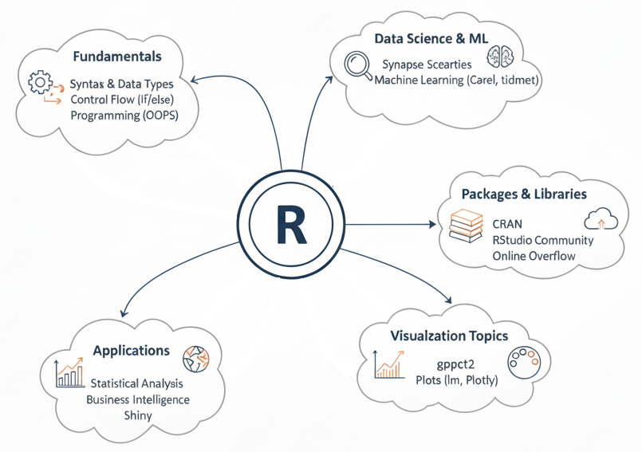
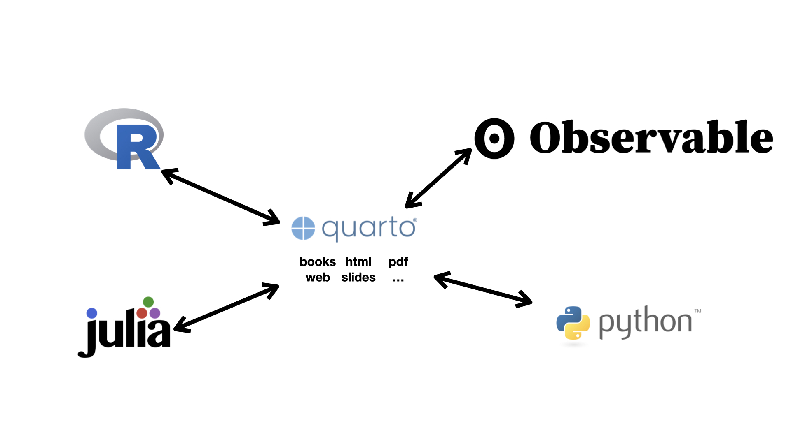

Pre-Class Learning Summaries
R

Quarto

Pre class learnings(imported from the google doc that I used for the mindmap over the course of the semester):
Paxton Boyd Mindmaps
1/30: - File organization is crucial for big projects, essential rules: - Minimum Folders: Include a data folder and a code folder named, eg, code, scripts, or src. - Raw Data Integrity: Original data files should remain unaltered and clearly labeled. Ideally, store them in a raw subfolder within data. - Data Provenance: Keep the original data source information alongside the data, perhaps, eg, in a population-source.txt file next to population.csv. - Efficient Data Processing. If raw data cleaning is time-consuming, use a script, eg, population-process.qmd, to process it. Store the processed/cleaned data, eg, population-processed.csv, either alongside the raw data or in a dedicated processed or cleaned subfolder within data. - Absolute path starts from the computer’s root (like /Users/paxtonboyd/…) and usually breaks on other people’s computers. - Relative path starts from your project/repo folder (like data/myfile.csv) so your code works anywhere the repo is cloned.
2/2: Adv Data Viz - Ggplot2 reference page for help with functions - Purpose of data visualizations: provide a clear message - Multiple data sets can be passed into a single plot
2/6: Adv Spatial - CRS’s are a specific set of rules that tells software how coordinates relate to Earth - Ellipsoid: A smooth, math-based model of the Earth’s shape (a “lumpy potato shape”) used for mapping calculations. - Datum: The reference system that positions that ellipsoid relative to the real Earth (so coordinates line up consistently). - Projection: The method for flattening the Earth (from 3D to 2D) so it can be shown on a map, which always causes some distortion. - Use sf for spatial data - Vector data: points/lines/polygons (cities, roads, county boundaries) - Raster data: a grid of cells (elevation, temperature, satellite imagery)
2/9: Adv data wrangling - Check types with class(), typeof(), str(), and glimpse() so you know what you’re actually manipulating. - Reorder and clean categories with fct_relevel(), fct_reorder(), fct_infreq() so plots/tables show factors in a meaningful order
2/13: Adv data wrangling II - Stringr cheatsheet in bookmarks - . any character - \d digit, \w word char, \s whitespace - [abc] one of these, [a-z] range, [^...] not these + one or more, * zero or more, ? optional, {n} exactly n - If you need “either/or”, use | and parentheses: (cat|dog)s? - Escape special characters: . ? + * ( ) [ ] need \. etc. (with strings, you often need double backslashes.)
2/18: Missing Data - MCAR: missingness is totally random (not related to any variables) → least problematic - MAR: missingness depends on observed variables (e.g., income missing more for younger people) → fixable with good modeling - MNAR: missingness depends on the missing value itself or unobserved factors (e.g., high income people skip income question) → hardest, can bias results even after typical fixes - Before doing any analysis, look at missing data summaries and explore the data, make sure it is functional
2/23: functions - If you’ve copied and pasted 3 or more times -> make function - scope refers to the area of a program where a named object is recognized and can be used. - R uses lexical scoping, which means that the scope of a variable is determined by where it is created in the code.
2/27: Base R - We have been using tidyverse, but Base R is the default set of packages installed with the R programming language - Extracting first element of a list, x: x[[1]] - Subsetting a vector x on base r: x[1:3] - If df is a data.frame, then df[, cols] will return a vector if cols selects a single column and a data frame if it selects more than one column. If df is a tibble, then [ will always return a tibble.
3/2: Loops + iterations I - Iteration is what happens in for loops - Other iterations: across data frame columns, using map and walk(instead of a for loop) - Anonymous functions can be created for one time use and aren’t named/saved - across() helps you modify multiple cols, first argument is ‘.cols’ – the cols you want to modify. This function is helpful in summarize() and mutate()
3/6: Loops + Iterations II - Purrr is the tidyverse’s answer to apply functions for iteration - Workhorse of purr is lists(vectors, df, list) unlike dplyr(whose workhorse is the df) - A vector is a way of storing many individual elements (a single number or a single character or string) of the same type together in a single object, - A data frame is a way of storing many vectors of the same length but possibly of different types together in a single object - A list is a way of storing many objects of any type (e.g. data frames, plots, vectors) together in a single object - map function is one that applies the same action/function to every element of an object (e.g. each entry of a list or a vector, or each of the columns of a data frame)
3/23: API - API(application programming interface) is a set of rules that enables different software applications to communicate with each other - JSON(JavaScript Object Notation) - The basic structures of JSON are: - A set of name/value pairs - An ordered list of values - URL has three key parts: - Base URL — the server address (https://api.census.gov) - File path — the desired resource (data/2019/acs/acs1) - Query parameters — filters or options after ? (?get=NAME,B02015_009E,B02015_009M&for=state:*) - ‘urltools’ package provides support for parsing and interpreting urls
3/25: API II - Simplification - process in where JSON arrays automatically get converted from a list into a more specific R class - The fromJSON function has 3 arguments which control the simplification process: - simplifyVector - JSON arrays containing primitives (strings, numbers, booleans or null) simplify into an atomic vector - simplifyDataFrame - JSON arrays containing objects (key-value pairs) simplify into a data frame - simplifyMatrix - JSON arrays containing equal-length sub-arrays simplify into a matrix (or higher order R array)
3/30: Web Scraping - Code can be used to extract info from websites - Each component(or element) of a website has a certain path that can be used to access it, which can be found through the selector gadget chrome extension(what we use) - You can group certain elements that have similarities - Every webpage is written in HTML — a nested set of tags. CSS selectors are patterns that let you target specific tags or groups of tags. - Tags like,
,
, organize content - class and id attributes label specific elements - CSS selectors let you say ’grab allinside a